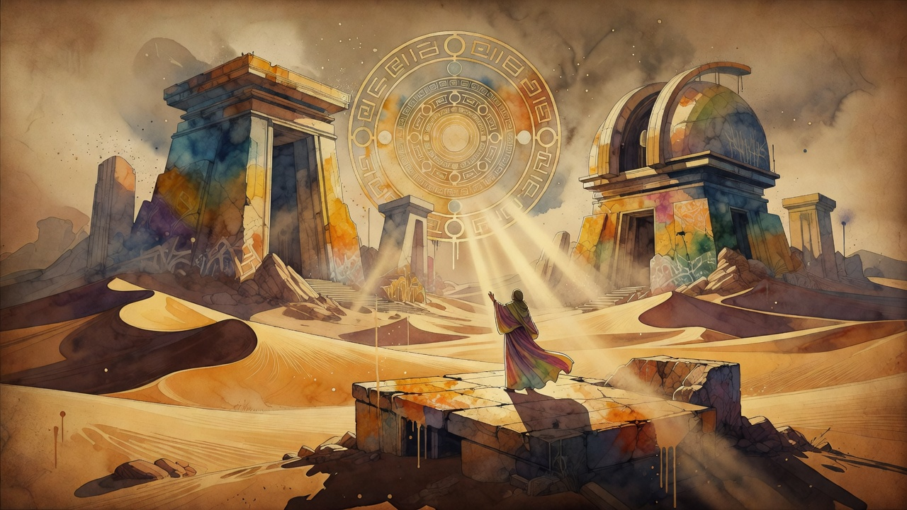

AI Breaks Physics
Claude achieves 9-loop quantum physics calculation, solving long-standing challenge
Anthropic announced its Claude model computed the nine-loop correction to scattering amplitudes in planar N=4 super-Yang-Mills theory, a result previously considered unreachable with conventional methods. Physicist Lance Dixon independently verified the result, achieved for a few thousand dollars in compute — a fraction of the cost of traditional approaches.